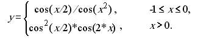
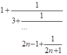

Опанувати теоретичні основи застосування рекурентних співвідношень для обчислення тригонометричних, експоненціальних, степеневих функцій та розробити програми функціональними мовам програмування для обчислення їх значень.
Обчислити значення функції у, розвинувши функцію cos(x) у ряд Тейлора. Аргумент х змінюється від -2 до 2 з кроком 0.5. Визначити похибку.
Обчислити нескінчений ланцюговий дріб, задавши значення n при виклику функції:
Формула, що виражає член послідовності через один або декілька попередніх, називається рекурентним співвідношенням. Послідовність, члени якої задовольняють деякому рекурентному співвідношенню, називається рекурентною. У загальному випадку рекурентне співвідношення визначає залежність члена послідовності {Sn} від k попередніх членів: Sn = F(Sn-k,…,Sn-1). У задачі необхідно розвинути тригонометричну функцію cos у ряд Маклорена (Тейлора) за наступною формулою 1 – x^2/2! + x^4/4! – x^6/6! + ….
Код починається з імпортування Data.List і System.IO. Починаємо з визначення двох функцій, uCos і y. Вони використовуються для обчислення результату виразу. Функція першого завдання полягає в тому, щоб надрукувати «Помилка:», а потім custom і buildin, які є значеннями Double. Потім він друкує «Результат:», а потім список чисел від -2 до 2 з кроком 0,5. Щоб зрозуміти цей код, нам потрібно знати, що робить кожна функція: uCos :: Double -> Double -> Double -> Double. Далі він друкує «Результат:», який показує всі числа з [-2, -1,5 .. 2] . uCos приймає два значення Double, x і n, які є додатними цілими числами. Він повертає значення Double із точністю до точності. Якщо x ** n / factorial n > precision, тоді uCos поверне (x ** n) / factorial n - uCos x (n + 2) precision, інакше 0. Функція y приймає значення Double як вхідні дані та повертає інше значення Double залежно від того, чи є вхідне значення більшим або дорівнює -1.
Код — це функція, яка приймає подвійне значення та повертає його дробову частину. Перший рядок — це оператор імпорту для Data.List, який містить усі функції списку, які нам потрібно використовувати в цій програмі. Другий рядок визначає нашу функцію під назвою «дріб». Він приймає значення Double і повертає його дробову частину як інше значення Double. Третій рядок друкує результат виклику нашої функції з n = 300 як вхідними. Код намагається надрукувати результат дробового обчислення. Фрагмент складається з двох частин: 1) основна функція, яка приймає вхідне значення та друкує результат обчислення. 2) Вкладена функція під назвою secondTask, яка містить інструкцію putStrLn, яка відображає текст на екрані.
- Це одна з самих популярних функціональних мов програмування.
- Зручна та обширна документація.
- Звичний синтаксис.
- Легкий та зручний редактор коду, який можна використовувати майже для будь-якої мови програмування.
- Має всі необхідні функції для програмування і працює нsабагато швидше в порівнянні з іншими IDE.
import Data.List
import System.IO
factorial :: Double -> Double
factorial 0 = 1
factorial n = n * factorial (n - 1)
uCos :: Double -> Double -> Double -> Double
uCos x n precision =
if (x ** n) / factorial n > precision then (x ** n) / factorial n - uCos x (n + 2) precision
else 0
y x
| x >= -1 && x <= 0 = uCos (x / 2) 0 0.0001 / uCos (x ** 2) 0 0.0001
| x > 0 = (uCos (x / 2) 0 0.0001 ** 2) * uCos (2 * x) 0 0.0001
| otherwise = -11111111111
firstTask = do
putStrLn "The error is:"
let custom = uCos 5 1 0.00000000001
let buildin = cos 5
print (abs (custom - buildin))
putStrLn "The result is:"
print (map y [-2, -1.5 .. 2])
import Data.List ()
import System.IO ()
fraction :: Double -> Double
fraction 0 = 1
fraction n = (2*n - 1) + (1 / fraction (n - 1))
secondTask = do
putStrLn "The result is:"
print (fraction 300)
У ході виконання лабораторної роботи було опановано теоретичні основи застосування рекурентних співвідношень для обчислення тригонометричних, експоненціальних, степеневих функцій та розроблено програми для обчислення їх значень. У рамках першої задачі було написано програму, що обчислює значення функції, розвинувши функцію cos(x) у ряд Тейлора. Аргумент х змінюється від -2 до 2 з кроком 0.5. Визначено похибку як модуль різниці між значеннням користувацької та встроєної функцій. У рамках другої задачі було написано програму, що обчислює нескінчений ланцюговий дріб, задавши значення n при виклику функції.